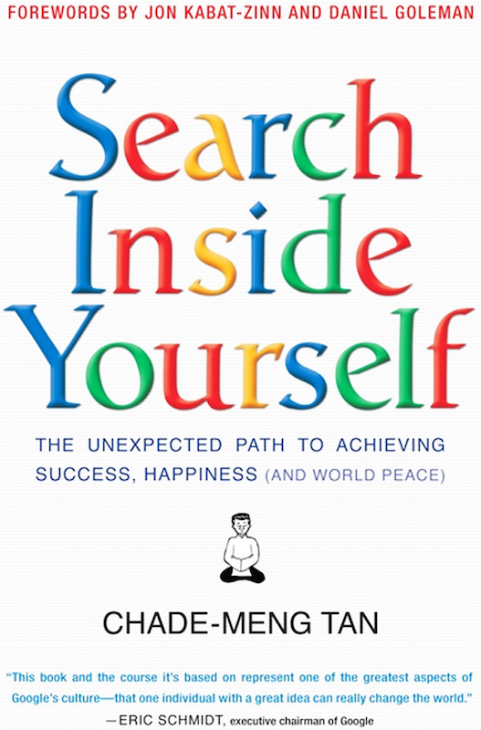

Cultural Blogs
As a part of my journey through the Web Devlopment program, I was required to read "Search Inside Yourself: The Unexpected Path to Achieving Success, Happiness (and World Peace)" by Chade-Meng Tan. In addition to reading the book I performed some of the
suggested exercies and documented them in blogs to the left. I've had a wonderful experience with this book and hope to take what I've learned with me, for the rest of my life.
